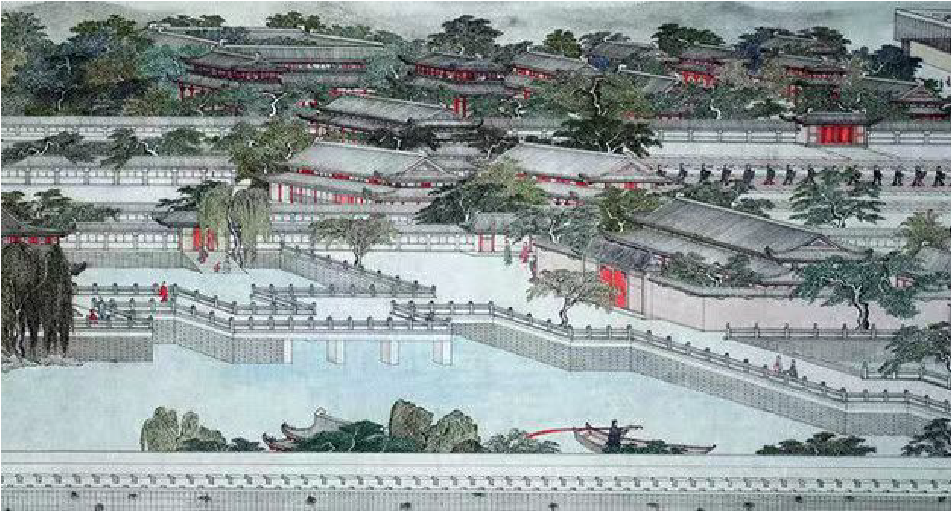

南宋临安宫殿
[nan song lin an gong dian]

在绍兴二年（1132年）决定以杭州为“行在”以后，就原有北宋杭州州治基础扩建而成的，称为大内。其位置在临安城吉门，范围从凤凰山东麓至万松岭以南，东至中河南段。南至五代梵天寺以北的地段。据明万历《钱塘县志》载：南宋大内共有殿三十，堂三十三。斋凹，楼七，阁二十，轩一，台六，观一，亭九十。此外，还建有太子官东官和高宗、孝宗禅位退居的宫殿德寿官，位置在临安大内以北。
临安大内分为外朝、内廷、东官、学士院、官后苑五个部分。外朝居于南部和西部，内廷偏东北。东官居东南．学士院拿北门。官后苑在北部，大体成前朝后寝格局。官线四周有皇城包围，皇城的南门为丽正门，北门为和宁门，东部有东华门。百部只有府后门。宫城有南北宫门与皇城南北门对。
外朝建筑有大庆殿、垂拱殿、后殷（又称廷和殿）、端诚殷四组。大庆殿位于南宫门内，是大朝会场所，垂拱殿在大庆殷舌侧偏北，后殿在垂拱毁之北，端诚殷在后殷以东，其中垂拱殿为常朝殿字，后毁为皇帝遇冬至、正旦等节日的斋宿之处。而端试殿则是一座多功能殷字。作为明堂郊祀时称“端诚”，策士唱名曰“集英”，宴对牵使曰“崇德”，武举投官曰“讲武”，随时更换匾额。